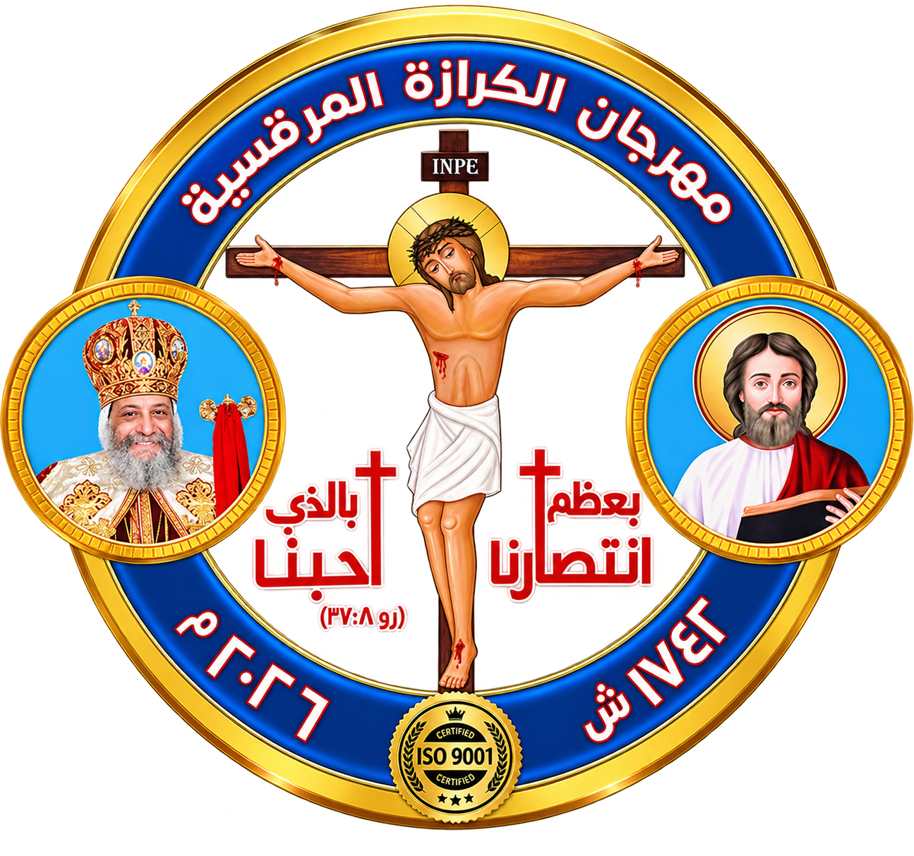

كيرلس الثاني
بابا الإسكندرية وبطريرك الكرازة المرقسية
الرعاية الأمينة
البطريرك رقم 67

الاسم قبل الرهبنة: كيرلس الثاني
الاسم الرهباني: —
الاسم البابوي: كيرلس الثاني
رقم البطريرك: السابع والستون
الكرسي المرقسي: البابا رقم 67
تاريخ الميلاد: القرن الحادي عشر للميلاد
مكان الميلاد: الإسكندرية
الخدمة البطريركية: من سنة 1078م إلى سنة 1092م
خدمته
خلف البابا خائيل الرابع على كرسي الإسكندرية سنة 1046م.
كانت خدمته قصيرة جدًا استمرت نحو سنة واحدة.
نياحته
نيح عن العالم سنة 1047م.
صلاته
بركة صلواته تكون معنا. آمين.